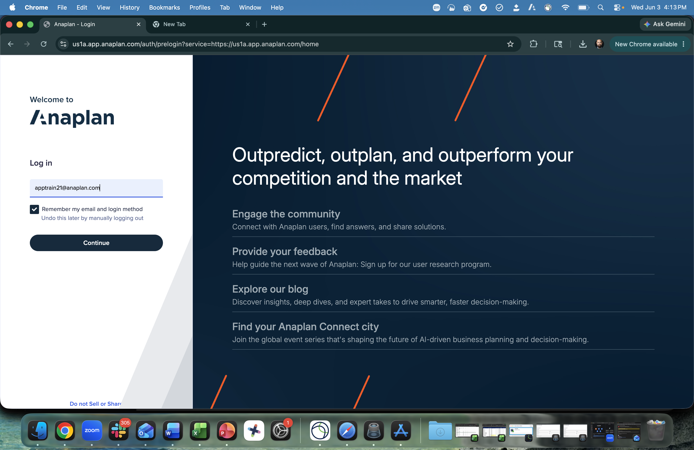
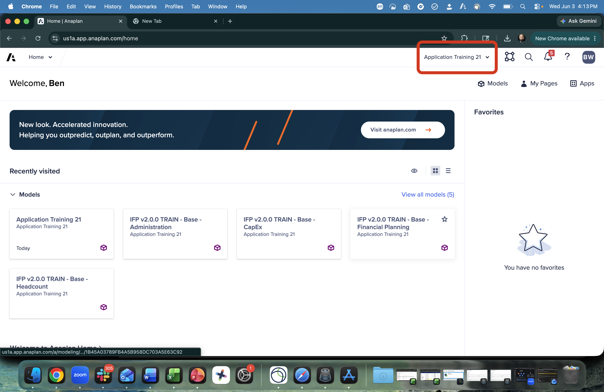

Acceso al tenant
Confirme que tiene acceso al Tenant de entrenamiento correcto antes de empezar
Esta es una traducción automática de la versión original en inglés. Para la versión autoritativa y más actualizada, consulte la versión en inglés. Reporte cualquier problema de traducción a su contacto Anaplan.
Antes de empezar
Este taller usa un Tenant de entrenamiento dedicado por participante, previamente preparado con modelos IFP 2.1. Debe confirmar el acceso al Tenant y Workspace correctos antes de continuar. No use un tenant de producción.
Si no puede confirmar el acceso al Tenant con los pasos a continuación, pregunte en el canal de Slack del taller antes de continuar. Todos los ejercicios prácticos dependen de que este acceso esté en su lugar.
Paso 1: Iniciar sesión
Vaya a https://us1a.app.anaplan.com/ e inicie sesión con las credenciales enviadas en su correo de acceso al tenant.

Paso 2: Confirmar el Tenant correcto
Después de iniciar sesión, verifique que está en el Tenant de entrenamiento correcto. El nombre del Tenant se mostrará en la barra de navegación superior.

Paso 3: Verificar sus roles y dataspace
Vaya a la sección Administration y confirme que su usuario tiene los cuatro roles requeridos para ejecutar la generación, más un dataspace asignado. Tome el hábito de hacer esto antes de cada generación: es la razón individual más común por la que un partner se queda atascado a mitad de un compromiso.
Su usuario debe tener los cuatro roles siguientes:
- Application Owner
- Workspace Admin
- Page Builder
- Integration Admin
Además, verifique que haya un dataspace asignado a su usuario. Sin él, la generación fallará.
Habitualmente vemos a partners intentar la generación sin antes verificar estos derechos de acceso con el admin del tenant, y luego perder horas depurando un fallo de generación que en realidad era un problema de permisos. Siempre confirme los roles y la asignación de dataspace con el admin de su tenant antes de empezar a configurar. Conviértalo en un hábito previo a la generación.
Acerca de los modelos TRAIN precargados
Su Tenant de entrenamiento también contiene un conjunto de modelos y una aplicación que Anaplan proporciona fuera de cualquier cosa que configure durante los ejercicios del taller. Tienen el prefijo TRAIN (por ejemplo, IFPv2.0.0-train-base-financial-planning) y vienen precargados con datos de muestra realistas.
Cuando llegue a la sección de Extensiones del taller, complete los ejercicios de extensión contra los modelos TRAIN precargados, no contra los modelos que generó desde su propia configuración. Los modelos TRAIN vienen cargados con datos, lo cual es necesario para demostrar y validar el comportamiento de las extensiones de extremo a extremo. Sus propios modelos configurados son solo para los ejercicios de configuración y generación.
Está listo
Una vez que haya confirmado que está en el Tenant de entrenamiento correcto, tiene los cuatro roles requeridos, tiene un dataspace asignado y sabe qué modelos usar para cada ejercicio, está configurado correctamente. Proceda al Resumen de IFP para comenzar el contenido del taller.